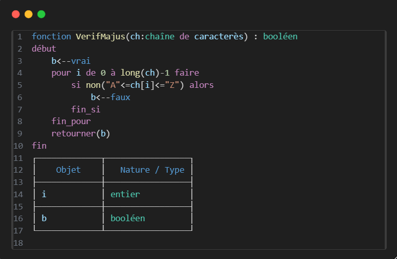
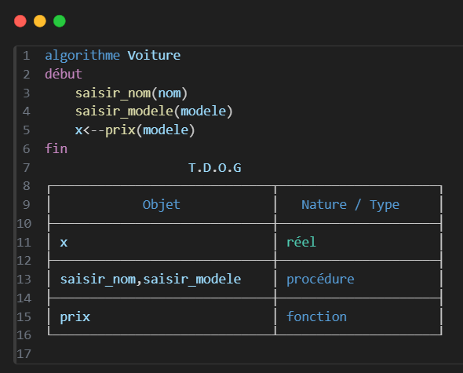

Un T.D.O ou Tableau de Déclaration des Objets est utilisé pour déclarer(spécifier) les variables qui sont créées à l’intérieur d’un module, du programme principal (PP)
(oui, il est possible d’appeler une fonction à l’intérieur d’une autre).
On distingue deux types de T.D.O :
T.D.O.L
Le Tableau de Déclaration des Objets Locaux est utilisé avec les fonctions ou les procédures.
Exemple :

T.D.O.G
Le Tableau de Déclaration des Objets Globaux est utilisé uniquement avec le programme principal (PP).
Exemple :

NB:
il est important de noter qu'il est possible et même frequent qu'on écrit "fonction" et "procédure" dans les T.D.O .
chaque fonction ou procédure utilisés au niveau du pp ou dans une autre fonction doit être déclarer.